A story every day
One short episode a day on YouTube Shorts and Instagram Reels, in Hindi and in English. Each one stands alone in under a minute.
Little stories about big habits.
बड़ी आदतों की छोटी कहानियाँ।
Forty-eight short animated stories, six season films and one 27-minute finale, released over seven weeks from Tuesday 10 November 2026.
Every week follows the same pattern, so you always know what comes next and when.
One short episode a day on YouTube Shorts and Instagram Reels, in Hindi and in English. Each one stands alone in under a minute.
At 7:00 PM IST each season arrives as one film: eight stories, about five minutes, with chapters so you can jump to your favourite.
All 48 stories in a single 27-minute film, from one seed in dry soil to a whole forest.
Monday to Friday bring one episode a day. Saturday is film night. Sunday closes the season with its last two stories.
| Slot | What goes out | India | Gulf | Singapore | UK | US East |
|---|---|---|---|---|---|---|
| 1:00 PM IST | Hindi Shorts and Reels, Monday to Friday; both languages on Saturday and the first Sunday slot | 1:00 PM | 11:30 AM | 3:30 PM | 7:30 AM | 2:30 AM |
| 7:00 PM IST | English Shorts and Reels, Monday to Friday; the Saturday-night season film; the Sunday finale Short | 7:00 PM | 5:30 PM | 9:30 PM | 1:30 PM | 8:30 AM |
Times shown are for November and December 2026, with the US on Eastern Standard Time and the UK on GMT. The first week starts on Tuesday 10 November, so Wednesday 11 November carries two episodes.
Each season is eight stories and a film. Pick a season to see its episodes and when they arrive.
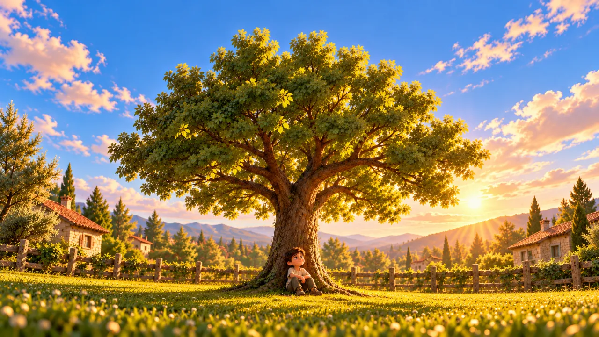
Season filmGrow Slow Season 1: Before the First Leaf
Eight tiny stories for anyone who is doing the work before anyone can see it working.
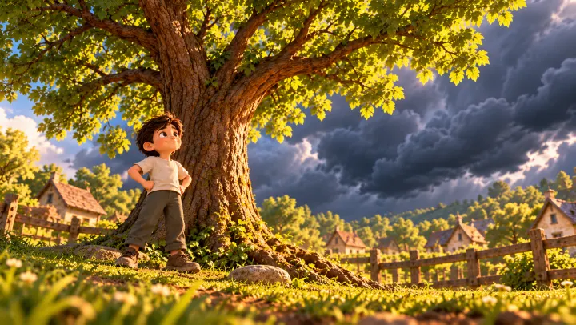
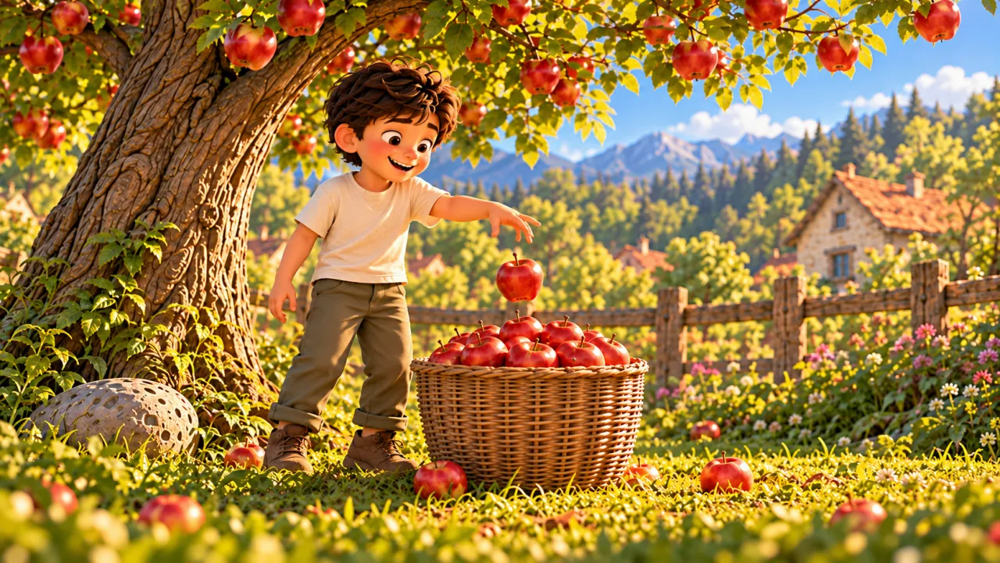
Season filmGrow Slow Season 2: When the Fruit Comes
Eight short stories about what comes after the wait: the first flowers, the first fruit and the first big offer.
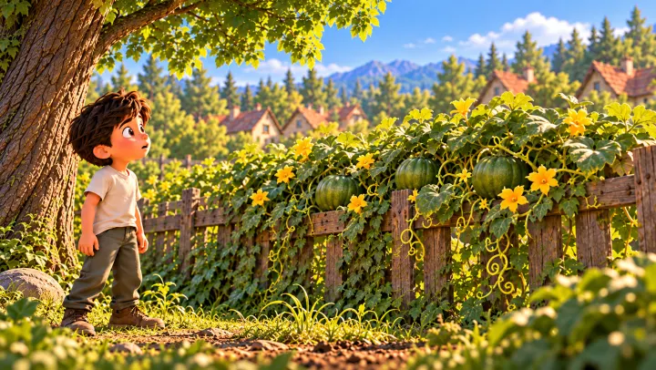
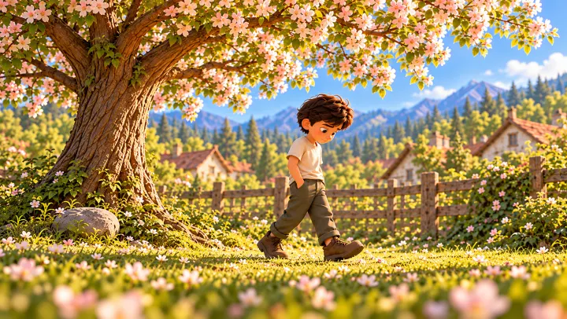
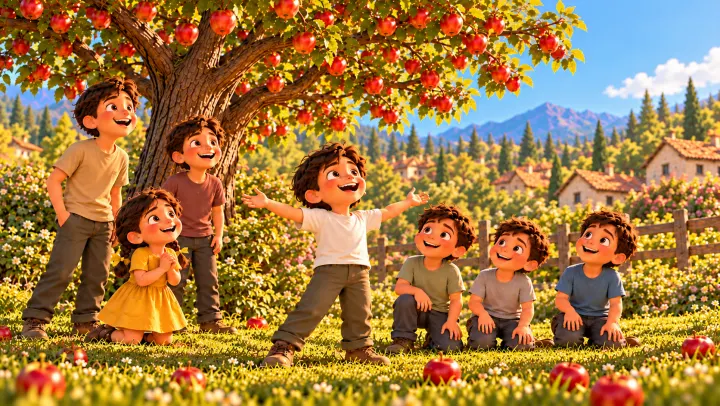
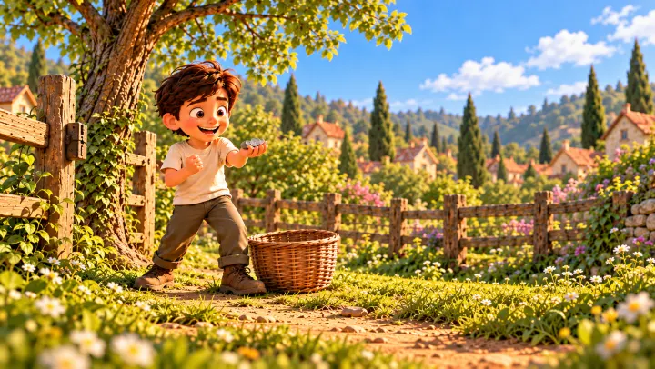
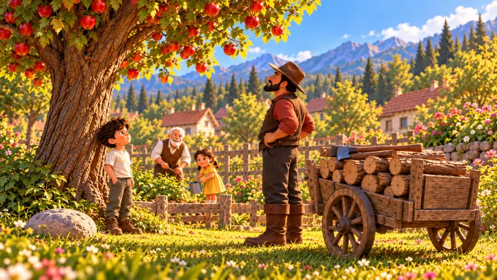
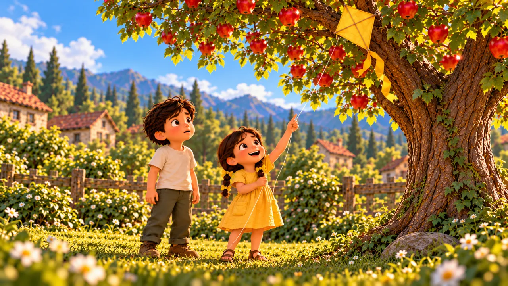
Season filmGrow Slow Season 3: Drought and Flood
Eight short stories about setbacks: a fall, a drought, a flood and a visitor in the night.
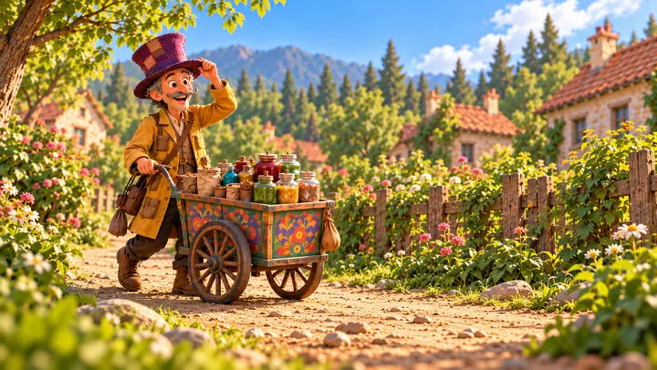
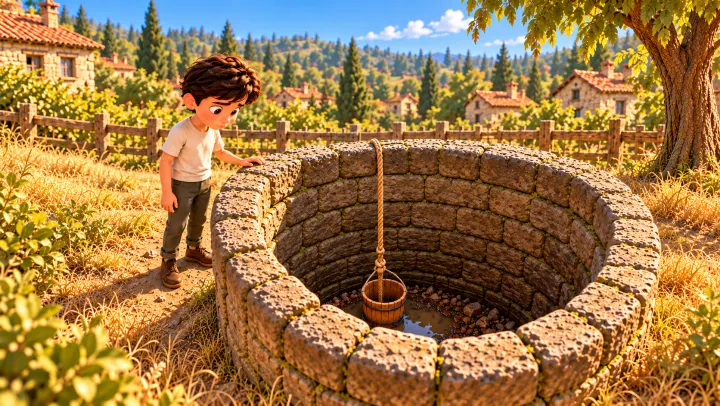
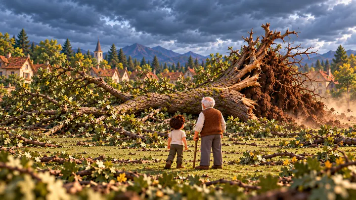
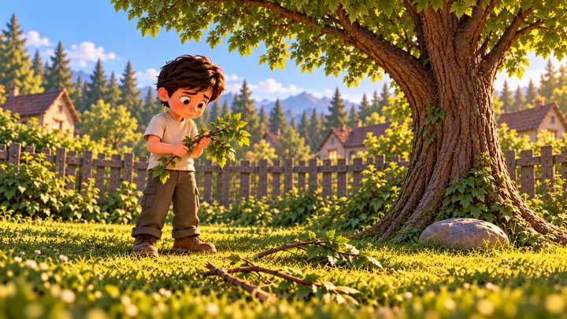
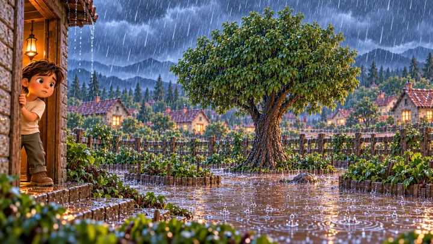
Grow Slow Season 4: Many Hands
Eight short stories about people: new kids, promises, shared work and the friends who stay.
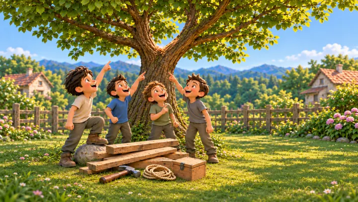
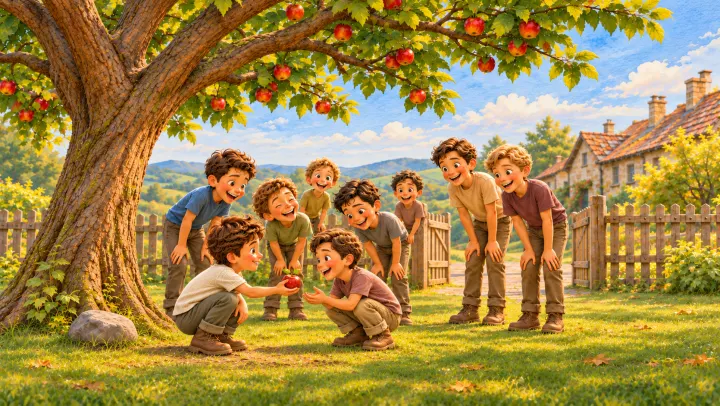
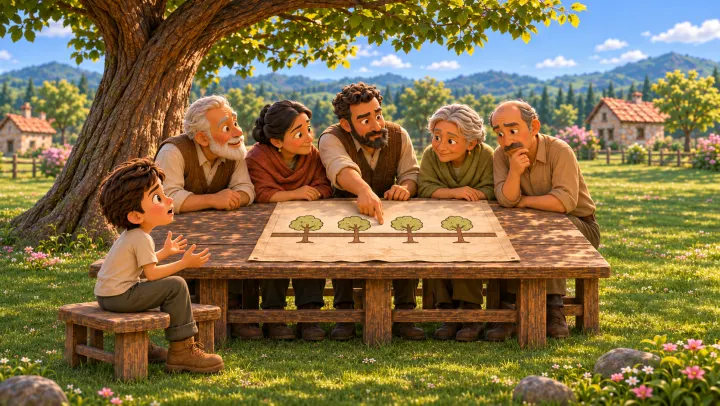
Hindi editions of this season follow once their recordings are finished.
Grow Slow Season 5: Let the Light In
Eight short stories about rest, letting go and doing good work that nobody notices.
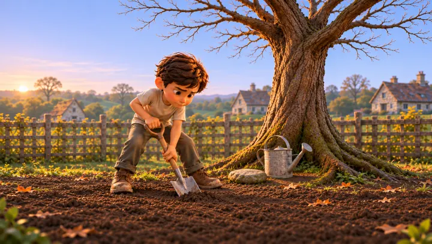
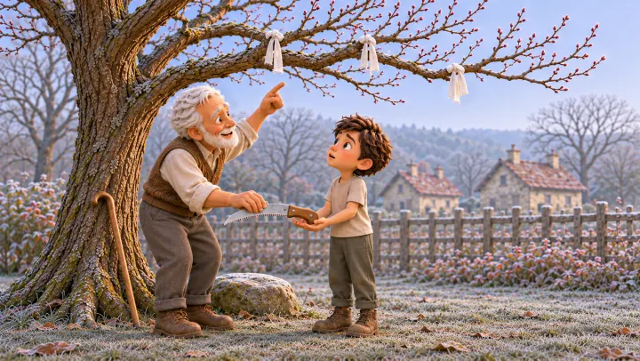
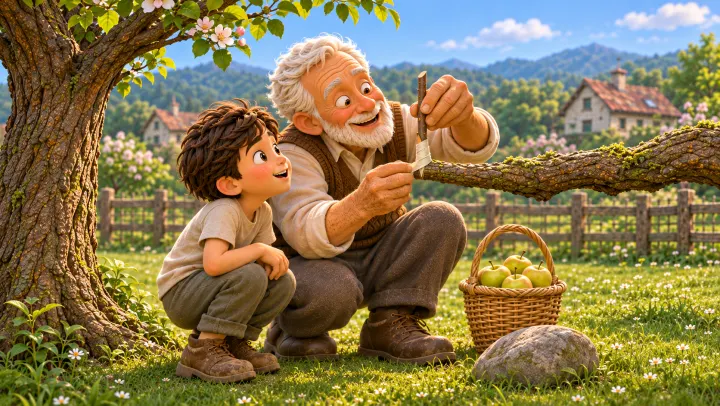
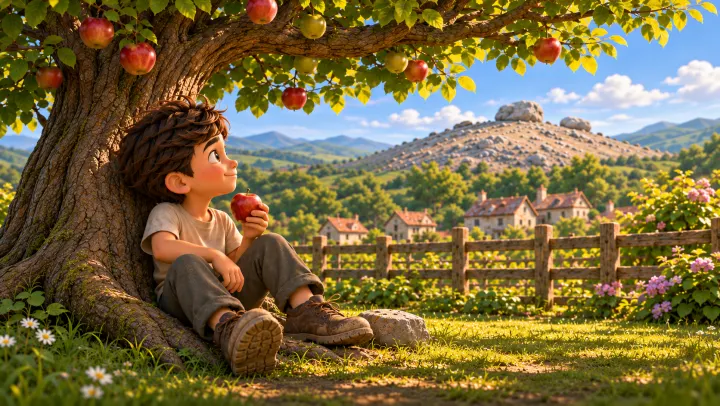
Hindi editions of this season follow once their recordings are finished.
Grow Slow Season 6: The Forest
Eight short stories about growing up, growing old and passing the watering can on.
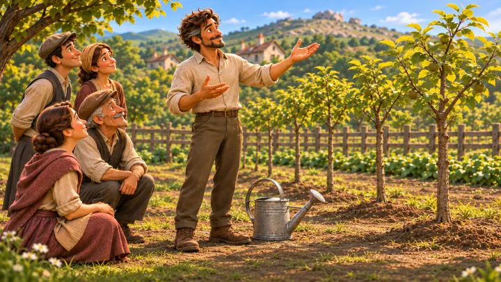
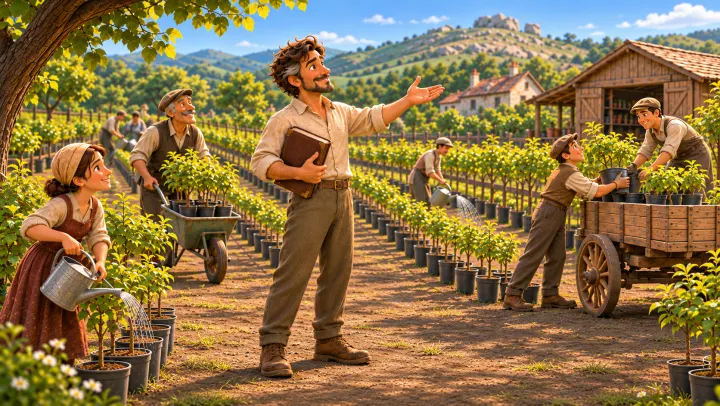
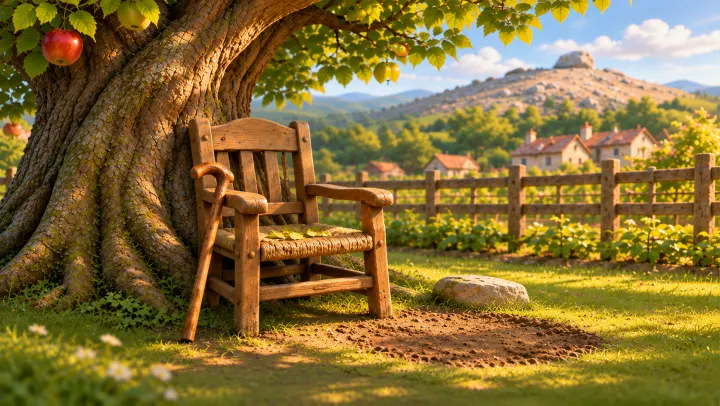
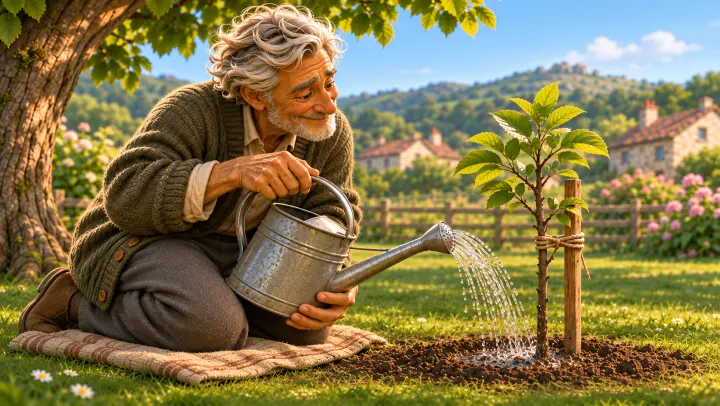
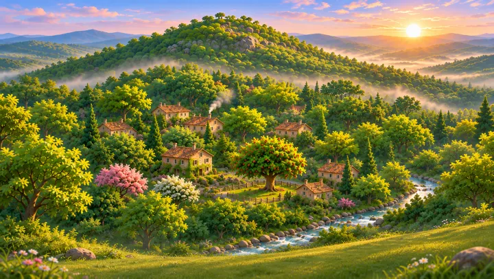
Hindi editions of this season follow once their recordings are finished.
Every episode and film on its release day. Select a thumbnail to jump to its season.
All 48 Grow Slow stories in one watch, from one seed in dry soil to a whole forest. Twenty-seven minutes, 48 chapters, and the whole story in order.
The week before, seven countdown Shorts build up to the film.
Hindi has its own home and so does English. The season films are in English and go out on YouTube.
Hindi Shorts, one a day, in Hindi with Devanagari captions.
English Shorts, one a day, in English with English captions.
Hindi Reels for India, released alongside the Shorts.
English Reels for everyone else, released alongside the Shorts.
Made with AI, and we say so. The pictures and the narration in Grow Slow are generated with AI tools, and every upload carries the AI-generated label.
A series of short animated stories about patience, humility, resilience, community and legacy. It begins with one boy and one seed in dry soil, and by the sixth season there is a whole forest.
No. Every story stands alone, and each season film collects its eight stories in one sitting. They do build on each other, so starting from Season 1 rewards you.
Shorts and Reels come in Hindi on Spark VertoByte and in English on Spark VertoByte English. The season films and the complete film are in English. Hindi editions of Seasons 4 to 6 will follow.
Yes. The pictures and the narration are created with AI tools, and every upload is marked as AI-generated.
One episode a day from Monday to Friday, then episode 6 and the season film on Saturday and episodes 7 and 8 on Sunday. Times are in the table above.
This is a plan, not a promise. Dates and times can move, and the channels always show the real schedule.